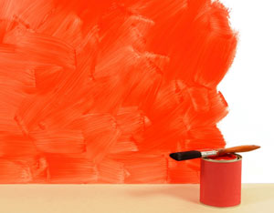

Dreaming of the perfect color for your interior painting project is fun, but it’s just one step in understanding how to choose paint. Walking into the paint store is like opening a robust menu of options: satin latex low-volatile organic compound (VOC), high-gloss alkyd with primer, matte latex bright white, etc. Before the in-store paint expert runs through your options, it’s best to have done some homework to be sure you choose the best option for your home.
Despite a host of dedicated followers, oil-based paints (or alkyds) have been overshadowed by the ease and versatility of latex paints. Cleaning up equipment after using oil-based paints requires paint thinner or turpentine. Oil-based paints still have their uses, but for most interior projects, latex is the way to go - they’re simply the easiest to apply.
More accurately called water-based paints, the paints labeled “latex” are often either artificial latex or acrylic. As of 2001, latex paints held nearly 80 percent of the market for interior projects. Latex won’t yellow or chalk (become powdery) - both of which are risks with oil-based paint - and it offers a series of environmentally friendly options.
The finish of your paint is how reflective it is. In general, the shinier the finish, the easier the surface will be to clean, although there are a number of innovative flat/matte and low-sheen paints formulated for easy cleaning. From no-shine to high shine, here are the options:
Here’s a quick list of recommendations for specific situations:
Most companies make a paint specifically suited for ceilings. Usually it’s a bright white, flat or matte latex that goes on easily without spattering or dripping, and it covers irregularities without multiple coats. Best choice: latex, flat/matte, bright white.
Kitchens are usually high-traffic, high-abuse areas full of water, grease and other potential paint pitfalls. If your kitchen has any old grease stains that just won’t come clean, spot treat with an oil-based (alkyd) or alcohol primer. Best choices: latex semi-gloss (walls), latex semi-gloss or gloss (trim).
The high heat and humidity of a bathroom creates the perfect environment for mold and mildew. You’ll want a painted surface that resists water and won’t let those nasty spores get a foothold. Instead of choosing ceiling paint, use a semi-gloss latex for bathroom ceilings. Best choices: latex semi-gloss (walls and ceiling), latex semi-gloss or gloss (trim).
For a child’s bedroom, most parents want something durable and easy to clean. More and more people are choosing low- or no-VOC paints in order to reduce chemical off-gassing. This is an especially good choice for children’s rooms because of the health concerns associated with VOCs. Best choices: latex satin (walls), latex semi-gloss (trim).
According to the Environmental Protection Agency, the air in our homes is one of the top five health risks in the United States. It regularly contains two to five times more organic pollutants than outside air. Indoor air pollution is caused by chemicals emitted from products such as cleaning supplies, pesticides, furniture, glues and building materials. The concentration of harmful pollutants in indoor air can be more than 1,000 times normal levels during or immediately following home-improvement projects such as painting.
The toxic effects of paints are attributed mostly to their volatile organic compounds. Solvents, fungicides/biocides and chemical pigments release toxic fumes into the environment in mass quantities immediately following application, and at low levels for years afterward. The good news is that eco-paint is one of the fastest growing segments of the green building movement, so going green with your interior painting project is easy, although a bit more expensive in some cases. Another plus - you’ll definitely notice less odor when using no- or low-VOC paints.
Low-VOC paints are those that contain less than 250 grams of VOCs per liter, but you can find brands that contain as little at 25 grams per liter. The shinier the finish, the more VOCs the paint probably has.
No-VOC paints are those that contain less than 5 grams of VOCs per liter, but adding standard chemical pigments can increase that to 10 grams per liter. So, darker colors will have more VOCs than lighter colors.
Recycled latex paint, although still a detriment to indoor air quality, is a way to ensure excess paint is redirected from the landfills and put to a good use. One shining example of this practice is the city of Portland, Ore., which has been accepting and recycling latex paint since 1992, reclaiming more than 1 million gallons since inception of the program.
Natural paints: There are a number of companies making paints based on plant resins, minerals, clay, milk casein and natural pigments rather than petroleum and chemical products, focusing on creating paints with less of an environmental impact overall.
Whether you want to add new color to a room with greener paint or you’re interested in trying to master the extra-hard finish of alkyd paint, with these general principles to guide you, you’ll find just the right paint for your interior painting project.
|
 ISTOCKPHOTO/DAVID FRANKLIN Choosing the right interior paint is easy if you understand some basic terms used to describe paint. |
|
|